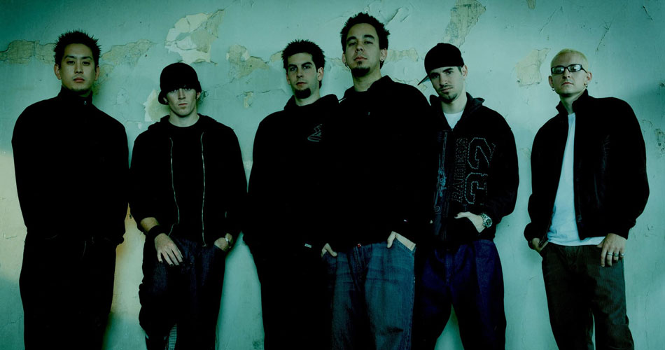
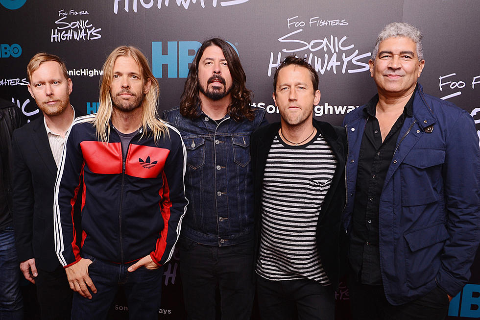

Red Hot Chili Peppers é uma banda de rock dos Estados Unidos formada em Los Angeles, Califórnia, em 1983. O estilo musical do grupo consiste principalmente no funk rock, bem como elementos de outros gêneros, tais como punk, rock alternativo, rap rock e rock psicodélico.
Visite o site do Red Hot Chili Peppers para estar informado dos próximos shows.

Queen foi uma banda britânica de rock, fundada em 1970 e ativa, sob sua formação clássica, até 1991. O grupo, formado por Brian May, Freddie Mercury, John Deacon e Roger Taylor, é frequentemente citado como um dos expoentes do seu estilo, também sendo um dos recordistas de vendas de discos a nível mundial.
Visite o site do Queen para mais informações.

Linkin Park é uma banda de rock dos Estados Unidos formada em Agoura Hills, Califórnia. A formação atual da banda inclui o vocalista e multi-instrumentista Mike Shinoda, o guitarrista Brad Delson, o baixista Dave Farrell, o DJ Joe Hahn e o baterista Rob Bourdon, todos membros fundadores.
Visite a loja do Linkin Park, caso tenha interesse em colecionar itens da banda.

Foo Fighters é uma banda americana de rock formada em 1994, em Seattle, Washington. A banda foi fundada pelo ex-baterista do Nirvana, Dave Grohl, como um projeto de um homem só, após a dissolução do Nirvana, devido ao suicídio de Kurt Cobain.
Visite o site do Foo Fighters.

Coldplay é uma banda britânica de rock fundada em 1996 na Inglaterra pelo vocalista e pianista Chris Martin e o guitarrista Jonny Buckland no University College London. Depois de formar o Pectoralz, Guy Berryman se juntou ao grupo como baixista e eles mudaram o nome para Starfish.
Visite o site oficial do Coldplay.